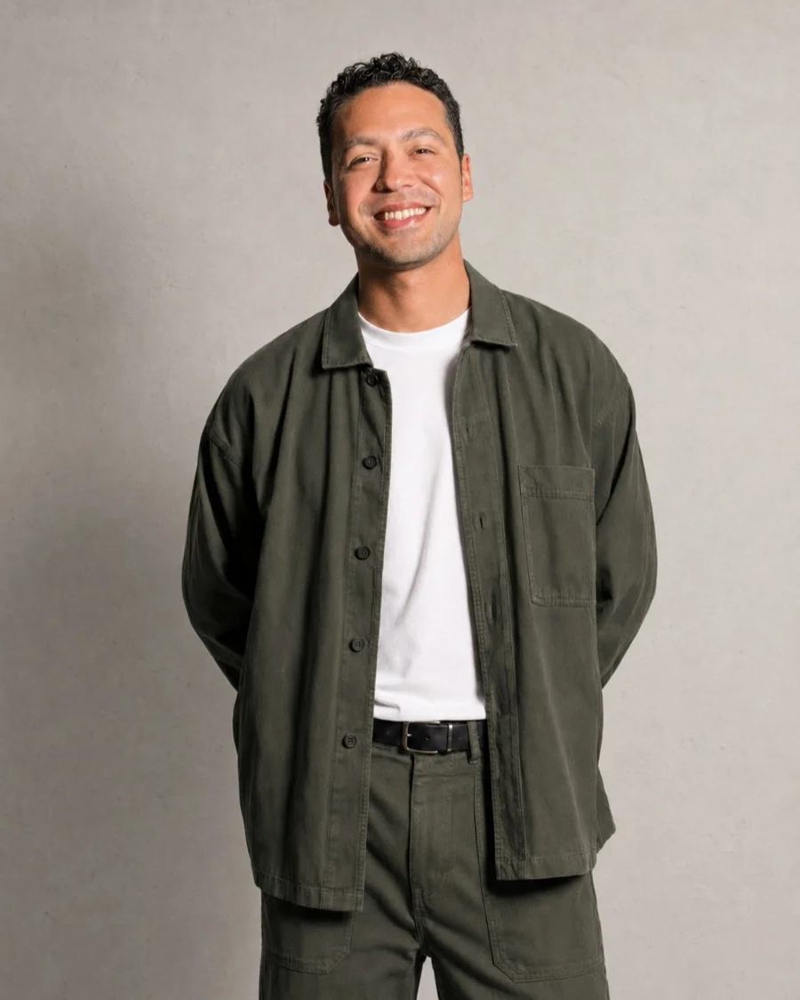
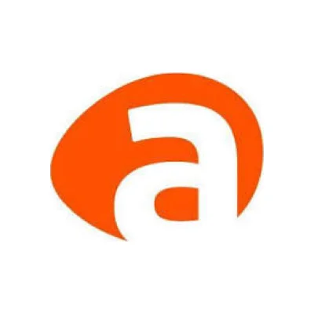

Before I draw a screen I need to understand the whole process, including the part nobody documented.
Let's work togetherHow I got here
I design products on in-house teams, not at agencies. I work alongside operations, support and engineering from day one, and that changes what reaches my desk: I see the problem before anyone frames it as a design request.
I've worked in corporate training, energy and payments. Different industries with the same problem underneath: long processes, lots of rules, and people who use the product because they have to, not because they feel like it. There, a poorly solved screen isn't an annoyance, it's a cost.


Where I fit
I do my best work when the problem arrives tangled and with constraints that aren't up for negotiation: regulation, legacy systems, teams that already have their own way of doing things. Bringing order to what nobody has sorted out yet is the part I care about.
I don't show up to redo what exists just for the sake of it. First I understand why it is the way it is, and there's almost always a reason, and from there I decide what to change. I'm open to joining a team as well as to project-based work.
Download my CV